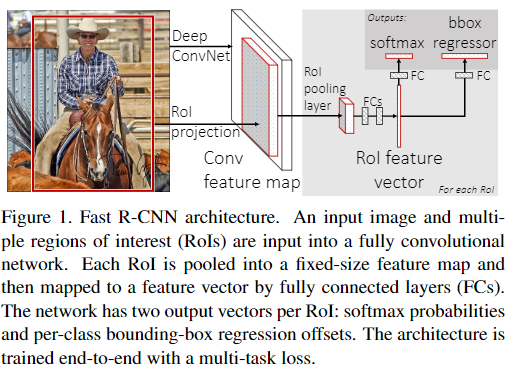

目标检测任务简单来说就是给定一张图片，模型需要根据图片找到感兴趣的目标，将其位置、大小标注出来。
两阶段检测算法，从RCNN到Faster R-CNN
目前的目标检测方法主要分为：两阶段的检测器、单阶段检测器两种，RCNN到Faster RCNN系列检测器是典型的两阶段检测器的代表。
R-CNN
论文《Rich feature hierarchies for accurate oject detection and semantic segmentation》中提出了R-CNN模型用于目标检测，其基本流程如下： - 使用Selective Search算法提取出2k个region proposal。 - 对于每个region proposal，先裁剪出对应区域的图片，然后使用AlexNet进行特征提取（特征取最后那个softmax层的输入，是一个4096维的向量）。 - 训练K个线性SVM分类器，对每个region proposal进行K次分类，得到其属于K个类别的得分。 - 对每个类别的proposal进行NMS后处理，得到最终的结果。
这里的Selective Search算法本质上是一种先分割图片然后再尝试各种组合的穷举算法，这里没有详细研究。
整体来说，R-CNN的流程非常粗暴，主要有两个阶段：1、获取region proposal，2、对region proposal进行分类，但这也是后面的两阶段检测方法的一般流程。
SPP-net
在R-CNN中存在的一个问题是region proposal的大小不相等，但是AlexNet要求固定大小的输入图片，否则特征维度会发生变换（如果现在来看这个问题的话，加个global pooling就OK了，但是当时没想到），因此在RCNN里面只能通过缩放，让region proposal满足输入大小的要求，这样带来了畸变的问题，为了解决这个问题，论文《Spatial Pyramid Pooling in Deep Convolutional Networks for Visual Recognition》提出了空间金字塔池化操作(Spatial Pyramid Pooling，SPP)，而且顺便结局了RCNN中对每个region proposal都提取一次特征带来的重复计算问题。
在SPP-net中，首先将整幅图作为输入（这里使用的模型不再是AlexNet，这里试验了ZF-5、Convnet*-5、Overfeat-5、Overfeat-7这几个模型，我这里不再详细研究），提取出特征图之后，再从特征图上抠出来region proposal对应的区域（这里不同于RCNN对每个region proposal进行一次特征提取，所以解决了重复计算问题），然后将抠出来的区域进行空间金字塔池化操作，使其变成固定大小的特征向量。再使用SVM对特征进行分类。
SPP操作的示意图如下所示，主要思想是将特征图先划分成固定数量的网格，然后再每个格子内进行池化操作，最后将固定大小的池化结果展开、拼接成固定大小的特征向量。
Fast R-CNN
有了SPP-net的思路之后，RCNN也做出了相应的改变，在论文《Fast R-CNN》中，接纳了SPP-net中先全图特征提取再裁剪region proposal区域的方法，然后对SPP-net进行改进：
- 只使用一个固定大小的网格分割，称为ROI Pooling层（并提出了ROI Pooling层的反向传播方法）。（至于为什么要降SPP改成ROI Pooling，可能主要是ROI Pooling有反向传播功能，其实如果SPP也实现了反向传播，那么ROI Pooling不一定比SPP效果好，不知道有没有人进行过对比）
- 特征提取模型换成了VGG。
- 对特征的处理采用神经网络，不再使用SVM，对于分类，使用softmax函数得到类别概率。
- 特征除了用于分类之外，还用于更精确的位置回归（使用smooth L1损失），并且让这两个任务共享一部分全连接层，提出了多任务损失函数的训练方法。
Fast R-CNN的简略流程示意图如下所示： 
Faster R-CNN
Fast R-CNN还是没有做到完全的端到端得到输出结果，因为还是要依赖Selective Search算法来生成region proposal。
在论文《Faster R-CNN: Towards Real-Time Object Detection with Region Proposal Networks》中，提出了Faster R-CNN，其中使用一个区域建议网络（Region Proposal Network，RPN）来替代Selective Search算法进行region proposal工作。
RPN的思路应该来源于Fast R-CNN中的位置回归操作，Fast R-CNN中证明神经网络可以用于位置回归问题，因此自然就会有一个想法是使用神经网络来对输出候选位置。但是如果直接回归位置，有两个问题：
- 特征图上某个像素点，应该回归哪个目标的位置（在之前的方法中，位置回归的目标很明确，因为region proposal有了之后，查找数据标签，可以很容易知道对于这个位置应该去回归哪个目标，或者这里面没有目标，那么就不用回归位置）
- 如果是输出像素坐标，那么对于不同大小的图片，不同尺度和比例的目标，回归任务很难收敛。
对于上面两个问题，这里提出了Anchor的机制，首先在图片上按照一定的规律分布好各种尺度和比例的方框（Anchor box，一个像素点可以有多个Anchor box），然后每个像素点（Anchor）输出anchor box的类别（前景还是背景）、缩放和偏移量。
每个anchor box要么匹配一个目标（其分类类别为这个目标的类别且回归目标为这个目标的位置），要么在训练过程中将其分类为背景类，并且不计算其回归输出的loss。
RPN和也是用和RCNN一样的特征提取网络（这个特征提取网络一般称为Backbone）。
Faster R-CNN中的预测结果计算
Faster R-CNN的RPN和RCNN对于回归量的输出都是\(\delta_x, \delta_y, \delta_h, \delta_w\)，分别表示中心点的偏移值，以及box长宽的缩放值，而且不是像素单位，因此需要转换成像素单位需要进行一些转换如下，这里的\(b_x, b_y, b_h, b_w\)分别表示最终预测box的中心和长宽，然后\(p_x, p_y, p_h, p_w\)分别表示先验box（在RPN阶段先验box就是Anchor，在RCNN阶段先验box就是RPN的Proposal Box）的中心和长宽。 \[ \begin{aligned} b_x &= p_x + p_w \delta_x\\ b_y &= p_y + p_h \delta_y\\ b_w &= p_w \exp(\delta_w)\\ b_h &= p_h \exp(\delta_h)\\ \end{aligned} \]
这个计算方式可能导致的问题：1、\(b_x,b_y\)可能超出先验框的范围，2、由于roi pooling之后，RCNN只能看到Proposal Box之内的内容，因此RCNN预测得到的\(\delta_w,\delta_h\)如果大于0，那么则表示预测的box范围超出了Proposal Box区域，可能存在预测不准确的问题，当然，由于特征图上的像素点具有一定的感受野范围，因此按理说RCNN还是可以看到一些Proposal Box之外的信息的。
为什么要使用Smooth L1作为回归任务的损失函数
在回归损失函数中，最常用的是L2损失函数，\(L = (h(x;\theta) - y) ^ 2\)，其导数\(\frac{\partial L}{\partial \theta} = \frac{\partial h(x;\theta)}{\partial \theta}(h(x;\theta) -y)\)，这里的问题在于：如果模型初始化得不好，再训练开始时\(h(x;\theta) - y\)特别大，则会导致梯度特别大，模型将难以训练。那么一个自然地想法是使用L1损失函数，但是L1损失函数不是处处可导，梯度会发生突变，也不利于训练，因此将L1损失函数进行一些平滑操作，给出了smooth L1损失函数如下所示： \[ \begin{aligned} L(\theta) = \begin{cases} 0.5 x^2 &|x| < 1\\ |x| - 0.5 &|x| >= 1 \end{cases} \end{aligned} \]
RPN训练时的loss计算需要对负样本进行采样
RPN的训练目标是将Anchor Box进行前景和背景分类，并且对分类为前景的Anchor Box进行位置偏移量和缩放量的回归。
在训练时，需要首先分配Anchor Box的训练目标：给定一张图像样本上的所有gt box标签，首先需要计算所有gt box和每个Anchor Box的iou。
对于每一个Anchor Box，找到和其iou最大的gt box，按照和这个gt box之间的iou，有三种可能： 1. 如果大于某个iou阈值，那么则被分配给这个gt box作为前景来训练（即这个Anchor Box的分类目标是正样本，回归目标是对应的gt box）。 2. 如果小于某个iou阈值，则作为背景类处理（即这个Anchor Box的分类目标是负样本，没有回归目标，不计算回归损失）。 3. 如果iou不大又不小，则忽略这个Anchor Box，计算损失的过程中不考虑，这是因为一些Anchor Box包含了一部分目标，但是又包含得不够多，不能武断的将其作为前景或者背景来训练，因此干脆不管这一部分的训练，反正参数是共享的，其他的地方训练好之后，测试过程中这种地方输出是什么样影响不大。
在分配Anchor Box训练目标的过程中，绝大部分Anchor Box是被分配成负样本（背景类）的，，因此RPN训练时存在前景和背景两个类别不平衡的情况。所以一般的Faster R-CNN实现中，RPN的训练部分，会对Anchor Box进行采样。(例如mmdetection中的实现中，RPN部分的默认配置是采样的256个Anchor Box进行训练，首先随机采样128个正样本，然后采样128个负样本，如果正样本不够，那么负样本多采样一些填满256个)
多阶段检测器
Cascade R-CNN
在论文《Cascade R-CNN: Delving into High Quality Object Detection》中指出了Faster R-CNN中按照某个iou阈值分配Proposal正负样本存在的问题：iou阈值过低会导致大量的低阈值预测框，对于regression head来说非常难修正，因此会出现大量的close false positive预测（即iou不够从而被判定为false positive的预测），iou阈值过大又导致匹配到的正样本非常少，容易引起过拟合或者类别不平衡问题。
Cascade R-CNN中为了解决这个问题，提出了使用多级head，将预测iou逐渐提高的方法。
Cascade R-CNN提出的多级head预测如下图(d)所示，这里的H1、H2、H3都是独立参数，且在训练过程中使用的iou不相同。
Cascade R-CNN的思路很简单：在理想状况中，H1接收RPN输出的ROI Proposal作为B0，对B0进行分类和修正，并从中筛除一些背景或者iou较低的box得到新的预测框集合B1，H2则接收B1作为输入，对B1进行分类和修正，得到B2，H3对B2进行同样的操作，得到最终的预测输出。
三个步骤不同之处首先在于背景类的含义，例如存在三个iou阈值\(u_1 < u_2 < u_3\)，在H1中低于\(u_1\)的才被认为是负样本，而H2中低于\(u_2\)的被认为是负样本，H3则使用\(u_2\)作为负样本阈值，这样设置的意思就是每个Head负责筛掉不同精度的预测框，另外，就算这里\(u_3\)较高，也不会引起之前iou阈值高导致的匹配到的正样本非常少的问题，因为原始RPN的proposal虽然可能iou较低，但是经过H1、H2的逐步修正之后，B2之中iou普遍比较高了，即使\(u_3\)较高，也能匹配到较多的正样本用于H3的训练。
在预测过程中，Cascade R-CNN的不同Head先后进行预测，最终的分类得分将综合三个Head的预测结果（例如C1、C2、C3取平均），而回归结果直接使用H3得到的B3。
一阶段目标检测方法
一阶段目标检测方法主要是相对于Faster R-CNN这类二阶段检测方法来说的，在Faster R-CNN中，主要被分为region proposal和proposal的分类回归。
一阶段目标检测方法将region proposal这一步去掉了，不需要RPN来进行初步的定位，而是直接得到box输出结果。
一阶段检测器按照时间顺序主要有：YOLO v1、SSD、DSSD、YOLO v2、Retinanet、YOLO v3、YOLO v4等，这里做个简单的梳理。
YOLO v1
论文《You Only Look Once:Unified, Real-Time Object Detection》中提出了YOLO检测方法，其基本思想是将一幅图像分成\(S \times S\)的网格，如果某个目标的中心落在这个网格中，那么这个网格就负责预测这个目标。
网格中的一个格子可以输出\(B\)个bounding boxes，每个格子的输出如下：
- \(B\)个bounding boxes的位置回归信息（中心偏移：x,y（使用格子大小来归一化）；box的宽高：w,h（使用图片的长宽来归一化））共\(4\times B\)个值。
- bounding boxes对应的\(B\)个confidence scores（这个confidence score表示当前bounding box包含目标的概率乘以bounding box位置回归的置信度），其的回归目标定义为\(Pr(Object) \times IOU^{truth}_{pred}\)。
- C个类别信息，表示为\(Pr(Class_i|Object),i = 1,2,...,C\)，这是个条件概率，其含义是如果这个格子有目标，那么这个目标属于不同的类别的概率。
因此一个格子的输出个数是\(5 \times B + C\)，整个YOLO v1模型的输出个数是\(S\times S \times (5 \times B + C)\)。
在YOLO v1模型中，输入图片大小固定为\(448 \times 448\)，经过6次下采样之后变成\(7\times 7\)大小的特征图，作者取\(S=7\)，\(B=2\)，Pascal VOC的类别个数\(C=20\)，因此YOLO v1的输出是个\(7\times 7 \times 30\)的特征图，整个模型结构图如下所示，其中激活函数使用Leaky ReLU，参数为0.1。
损失函数
YOLO v1使用平方和误差来进行训练，但是论文中表示这样的损失函数不能完美的匹配优化Average Precision的目标（就是说定位误差和分类误差的权重相等不太合适），而且每张图片上不包含目标的格子居多，这些格子主导了梯度，导致预测置信度（confidence score）普遍偏低，同时模型训练过程容易震荡，因此作者在损失函数中引入了两个超参数：\(\lambda_{coord} = 5\)、\(\lambda_{noobj} = 0.5\)作为不同损失的权重。
另外，论文中还提到平方和损失在回归位置的时候，还有个问题是large box和small box对于同样的宽高偏差敏感度不同，为了缓解这个问题，论文中提出直接让模型预测\(w,h\)的平方，需要获取真正的长宽时，需要将模型的预测输出开方进行还原。
最终YOLO v1的损失函数如下： \[ \begin{aligned} &\lambda_{coord} \sum\limits_{i=0}^{S^2} \sum\limits_{j=0}^{B} \mathbf{1}^{obj}_{ij}[(x_i - \hat{x}_i)^2 + (y_i - \hat{y}_i)^2]\\ &+ \lambda_{coord} \sum\limits_{i=0}^{S^2} \sum\limits_{j=0}^{B} \mathbf{1}^{obj}_{ij}[(w_i - \sqrt{\hat{w}_i})^2 + (h_i - \sqrt{\hat{h}_i})^2]\\ &+ \sum\limits_{i=0}^{S^2} \sum\limits_{j=0}^{B} \mathbf{1}^{obj}_{ij}(C_i - \hat{C}_i)^2\\ &+ \lambda_{noobj} \sum\limits_{i=0}^{S^2} \sum\limits_{j=0}^{B} \mathbf{1}^{noobj}_{ij}(C_i - \hat{C}_i)^2\\ &+ \sum\limits_{i=0}^{S^2} \mathbf{1}^{obj}_{i} \sum\limits_{c \in Classes} (p_i(c) - \hat{p}_i(c))^2 \end{aligned} \]
其中\(\mathbf{1}^{obj}_{ij}\)是个指示函数，表示第\(i\)个格子的第\(j\)个box是否对应一个目标。\(\mathbf{1}^{obj}_{i}\)则表示第\(i\)个格子是否包含目标，\(\mathbf{1}^{noobj}_{ij} = 1 - \mathbf{1}^{obj}_{ij}\)表示第\(i\)个格子的第\(j\)个box是否不对应一个目标。
bounding box
YOLO v1中虽然一个格子对应两个bounding box，但是这里的bounding box概念和anchor box不同。
anchor box需要设置先验大小和长宽比，然后预测输出是相对于anchor box的偏移和缩放，计算loss时需要先用anchor box去和gt box匹配，确定好优化目标才能计算loss。
而bounding box不需要先验大小和长宽比，bounding box输出的是相对于格子中心的像素偏移（使用格子大小来归一化）以及像素长宽比（使用图片大小来归一化），计算loss时要看这个格子输出的两个bounding box哪个和gt box的iou大，iou大的那个bounding box才进行回归优化。但是每个格子中的两个bounding box都会去训练confidence score，这个的回归目标也是和bounding box的输出有关（\(Pr(Object) \times IOU^{truth}_{pred}\)，其中\(IOU^{truth}_{pred}\)是bounding box预测值和gt box的iou）。
这样看来YOLO v1算是一种anchor free的检测方法。
YOLO v2
在论文《YOLO9000:Better, Faster, Stronger》中对YOLO v1进行了一些改进最终提出了YOLO v2检测方法。 ### 相对于YOLO v1的改进点
- batch norm，每个卷积层后面都添加Batch Normalization层，并且不再使用droput。
- hi-res classifier，YOLO v1使用ImageNet上预训练的模型来进行初始化，这个预训练的输入图像是224大小的，但是为了提高检测结果的准确性，检测训练使用的输入大小是448，这样的切换模型难以适应，因此YOLO v2中增加了一个在ImageNet数据集上使用448大小finetune 10个epoch的过程。
- Convolutional，在YOLO v1中，最终是使用全连接层来得到最终的预测，直接预测目标像素坐标和大小，这样做导致位置定位比较困难，难以训练，论文中参考了Faster RCNN的做法，认为使用卷积的方式直接得到每个像素点相对于Anchor box的偏移缩放信息的预测方法比较简便且容易训练，因此这里将全连接层改为卷积层的同时引入了Anchor box的做法（引入了Anchor box之后，预测的类别和是否包含目标这些问题都是针对每个anchor box的，之前是一个格子一个类别，且只判断格子是否包含目标。）
- Anchor boxes，像Faster RCNN那样使用手工设计的Anchor box大小和长宽比，使用手工设计的Anchor box之后在Recall上面有提高，但是在mAP上面反而下降了一些（增加了一些假阳性）。
- new network，YOLO v2使用一种更加接近VGG的backbone：Darknet-19，相比于YOLO v1的特征提取网络，这里除了替换\(7\times 7\)的卷积、通道个数、卷积核层个数等变化以外，下采样次数从6次变成了5次，如果输入448大小的图片，那么输出大小将变成\(14\times 14\)，但论文中认为最终输出的格子数为奇数比较好（便于那种占满整图的大目标的中心落在格子中心而不是格子边缘），因此将输入大小调整为\(416\)，得到\(13\times 13\)大小的输出。
- dimension clusters，论文中认为通过聚类学习Anchor box的大小设置比手工设计Anchor box的大小更便于模型回归目标位置，因此使用k-means聚类方法，从标注中的gt box形状中找到适合的Anchor box大小，在聚类时，两个box之间的距离使用\(d = 1 - IOU\)来表示（这里的IOU计算假定两个box的中心重合，这里不用考虑box的位置），作者给出的数据中，如果是手工设计的9个Anchor box大小，和gt box平均IOU在0.609，但是通过聚类学习到Anchor box，只需要5个大小就能够达到平均IOU0.61，明显好于手工设计的Anchor box先验大小。
- location prediction，在基于Anchor的预测的方法中，模型给出预测的偏移量（\(t_x, t_y\)）之后，预测的中心位置计算方式为\(x = (t_x \times w_a) + x_a, y = (t_y \times h_a) + y_a\)，其中\(w_a, h_a, x_a, y_a\)分别表示Anchor Box的宽、高、中心x坐标、中心y坐标，但是这样的预测方式论文中认为没有对预测box的位置进行约束（对于一个左上角的Anchor box，其预测结果可能跑到图片右下角），论文中认为这给模型带来了不利于优化的不稳定性。因此论文中提出将预测方式改为\(b_x=\sigma(t_x) + C_x, b_y=\sigma(t_y) + C_y, b_w = p_we^{t_w}, b_h = p_he^{t_h}, Pr(object)\times IOU_{b}^{object} = \sigma(t_o)\)（这里的\(C_y,C_x\)代表格子的左上角坐标，因为\(\sigma(t_x),\sigma(t_y)\)都是在0~1范围，因此可以保证这样预测出来的中心不会超出这个格子，\(p_w, p_h\)则代表Anchor Box的宽高，可以见后面的YOLOv2预测方式示意图），这里的意思是，对于每个Anchor Box，都模型都输出四个值\(\sigma(t_x), \sigma(t_y), t_w, t_h, \sigma(t_o)\)，对于模型的输出值，计算出最终预测框的中心：\(b_x,b_y\)以及预测框的宽高：\(b_w, b_h\)，以及预测框的置信度：\(Pr(object)\times IOU_{b}^{object}\)。
- passthrough，将\(26\times 26\times 512\)的特征图resize成\(13\times 13\times 2048\)然后和最后的\(13\times13\times 1024\)的特征图进行Concatenate操作，共同用于模型的最终预测，论文中解释说是为了提供更加细粒度的特征。
- multi-scale，因为YOLO v2抛弃了之前的全连接操作，因此可以使用不同尺度的输入进行训练，在训练过程中，每10个batch随机按照\(320:32:608\)来选择一次尺度。
- hi-res detector，这个论文中没有详细说明，不过从原文来看，这个意思就是在预测的时候使用\(544\times 544\)大小的图片。
以上各种改进的消融实验结果见下表：
location prediction这一项改进中所描述的预测方法示意图：
这里有个细节是在\(b_x=\sigma(t_x) + C_x, b_y=\sigma(t_y) + C_y\)这两个运算里面所有的项都不是像素单位，如果想要转换成像素单位，那么需要除以S，然后乘上图片的或着高
另外为了节省计算量，passthrough还有个改进版本：增加一次卷积操作，先将\(26\times 26\times 512\)的特征图变为\(26\times 26\times 64\)的特征图，然后再resize到\(13\times 13\times 256\)，最后拿去和\(13\times13\times 1024\)的特征图进行Concatenate操作。
YOLO v2的损失函数
这部分其实类似YOLO v1，全都是L2损失，只不过其中YOLO v1使用的那个开方的操作这里不用了，而且计算的类别是相对于每个Anchor来说的，其输出大小为\(S\times S \times B \times (5 + C)\)（这里的\(B\)是anchor个数），其他损失的计算和YOLO v1类似，论文中没有详细描述，如果感兴趣可以去研究YOLO v2的实现代码。
YOLO v3
在论文《YOLOv3: An Incremental Improvement》中提出了YOLO v3检测方法。
在YOLO v3中，相对于YOLO v2，首先更换了Backbone，从YOLO v2的Darknet-19改成了Darknet-53（根据论文中提供的Backbone分类任务训练结果中，Darknet-53的分类性能可以和ResNet-152比肩，但是速度是ResNet-152的两倍），这个新backbone中引入了resnet中的残差模块，顺便将Darknet-19中的池化层全替换成了步长为2的卷积层。
YOLO v3的另外一个主要改进是借鉴了FPN的思路，不仅在\(13\times 13\)大小的特征图上进行预测，同时也在\(26\times 26\)，\(52\times 52\)大小的特征图上进行预测，三种大小的特征图上分类的anchor box都是每个格子三个，但是大小不同，在\(52\times 52\)大小的特征图的Anchor Box最小，在\(13\times 13\)大小的特征图的Anchor Box最大，下图中最后的输出部分，每个像素点有255个预测值，其实就是\(3 \times (5 + 80)\)，其中3是Anchor Box个数，80是COCO数据集的类别个数。
在YOLO v3中，还有一个地方是其目标分配机制和YOLO v2稍有不同，对于一个格子，如果目标落在了这个格子中（这里因为三个不同大小的特征图都有输出，因此一个目标肯定会落在三个格子中，分别位于三个特征图上，这就关系到了\(3\times 3 = 9\)个Anchor Box，YOLO v2因为是单尺度特征图预测，因此只需要考虑其设定的5个Anchor Box），YOLO v3在处理这个问题的时候，计算了这9个Anchor Box和当前目标的iou，iou最大的那个Anchor Box用于预测当前目标，其余Anchor Box如果iou大于某个阈值（），则计算损失时忽略其置信度损失，否则当成负样本处理。
YOLO v3论文中并没有给出详细的结构描述图，下面的结构描述图来自于CSDN博客《yolo系列之yolo v3【深度解析】》
YOLO v3在COCO上进行的对比实验结果如下所示，这里可以看出YOLO v3在精度上并没有特别明显的竞争力，但是如果精度要求不是那么高的话，YOLO v3在速度上超越其他的单阶段检测器很多。
YOLO v4
YOLO v4在论文《YOLOv4: Optimal Speed and Accuracy of Object Detection》中被提出，其主要结构组件如下： - backbone：CSPDarknet53 - neck：SPP、PANet - head：YOLO v3
另外YOLO v4中使用了很多技巧：
- Bag of Freebies (BoF) for backbone：
- CutMix and Mosaic data augmentation
- DropBlock regularization
- Class label smoothing
- Bag of Specials (BoS) for backbone：
- Mish activa-tion
- Cross-stage partial connections (CSP)
- Multi-input weighted residual connections (MiWRC)
- Bag of Freebies (BoF) for detector：
- CIoU-loss
- CmBN
- DropBlock
- regularization
- Mosaic data augmentation
- Self-Adversarial Training
- Eliminate grid sensitivity
- Using multiple anchors for a single groundtruth
- Cosine annealing scheduler
- Optimal hyper-parameters
- Random training shapes
- Bag of Specials (BoS) for detector：
- Mish activation
- SPP-block
- SAM-block
- PAN path-aggregation block
- DIoU-NMS
其中Bag of Freebies (BoF)表示只在训练过程中增加时间成本，不影响预测过程的技巧，Bag of Specials (BoS)表示在预测过程中会稍微增加一点时间成本的技巧。
YOLO v4基本上算是个大型炼丹现场，作者在论文中都是用实验数据证明各种操作的效果，很少有理论分析，因此这篇论文更适合作为检测任务寻找提分手段的一个手册（一切以实验数据说话）。
多尺度问题
特征金字塔网络(Feature Pyramid Network，FPN)
在论文《Feature Pyramid Networks for Object Detection》中提出的特征金字塔操作已经是目前目标检测模型上的标准配置，无论是单阶段检测模型还是两阶段检测模型，均可以添加FPN结构来让模型获得更好的尺度鲁棒性。
FPN的结构示意图如下，其中左上角从下到上是检测模型中backbone的特征提取过程，每一层代表不同stride的特征图，原本的检测模型，例如Fatser R-CNN,是在最上面一个特征来进行roi proposal、roi classification和roi regression等操作，在加入FPN之后，获得了右上角的一系列特整图，不同stride的特征图预测不同大小的目标。
上图中画得不是很完整，一般backbone中会进行5次下采样，得到的特征图stride分别是2、4、8、16、32，对应的特征图称为C1、C2、C3、C4、C5，在mmdetection检测框架的Faster R-CNN-FPN的实现中，C5将通过大小\(3\times 3\)，stride为2的卷积下采样得到P6，另外C5经过\(1\times 1\)卷积之后变为P5，P5上采样后和C4的\(1\times 1\)卷积结果相加变成P4，P4再上采样和C3的\(1\times 1\)卷积结果相加变成P3，以此类推，分别得到P2、P3、P4、P5、P6，其中P2、P3、P4、P5、P6均参与RPN的roi proposal，而对于不同大小的roi，则在P2、P3、P4、P5中选择对应尺度的特征图来进行roi pooling/roi align。
原始FPN论文中，对于宽高为\(w,h\)的roi，其对应的特征金字塔等级计算方法如下，这里设置\(k_0=4\)表示第4级特征金字塔，即\(P5\)，因为ImageNet预训练的backbone，一般使用224大小的输入图像，而且最终结果是在C5得到的，因此这里让224以上的目标对应于\(P5\)特征图，小于224大小的目标则每小一倍，对应的特征等级减一 \[ level = \lfloor k_0 + \log_2(\frac{\sqrt{wh}}{224})\rfloor \]
在mmdetection框架的实现中，roi的分配则和原论文不同，mmdetection中，计算方式如下： - scale < finest_scale * 2: level 0 - finest_scale * 2 <= scale < finest_scale * 4: level 1 - finest_scale * 4 <= scale < finest_scale * 8: level 2 - scale >= finest_scale * 8: level 3
这里的scale是指\(\sqrt{wh}\)即roi的尺度，finest_scale默认值为56，这里的level 0对应P2，level 1对应P3，以此类推。
FPN在保证大目标的检测效果的同时，可以大幅提高小目标的检测效果，我认为其原因在于小目标物体的检测需要更加精细的位置信息，如果使用stride过大的特征图，会导致小目标的预测不够精确，同时小目标的信息容易被大目标掩盖，FPN中stride较小的特征图上融合了深层的特征图的信息，这可以让其的感受野非常大，而且感受野分布比较密集，小目标的检测可能也需要大感受野信息同时加上细粒度空间信息。